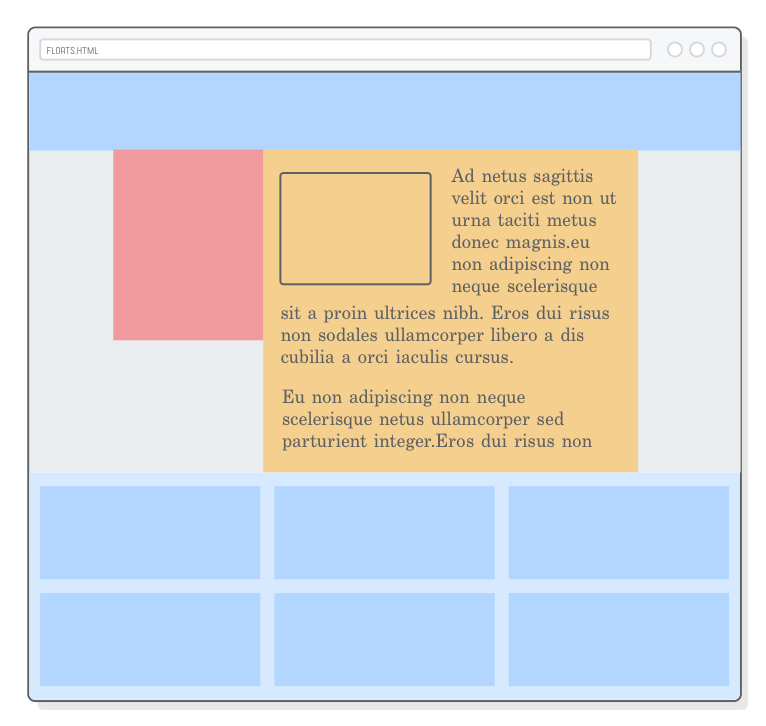
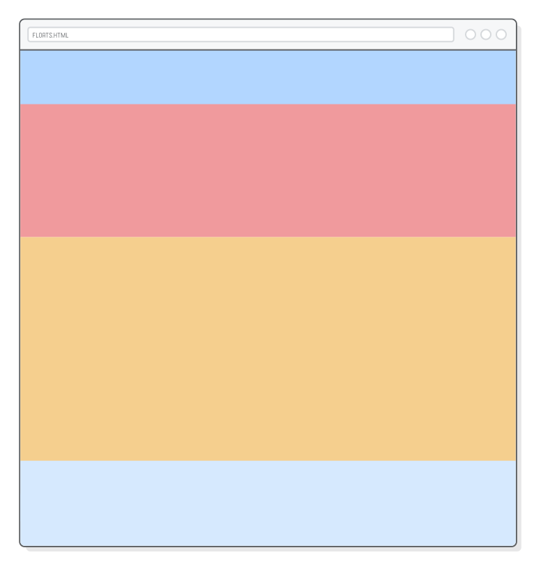
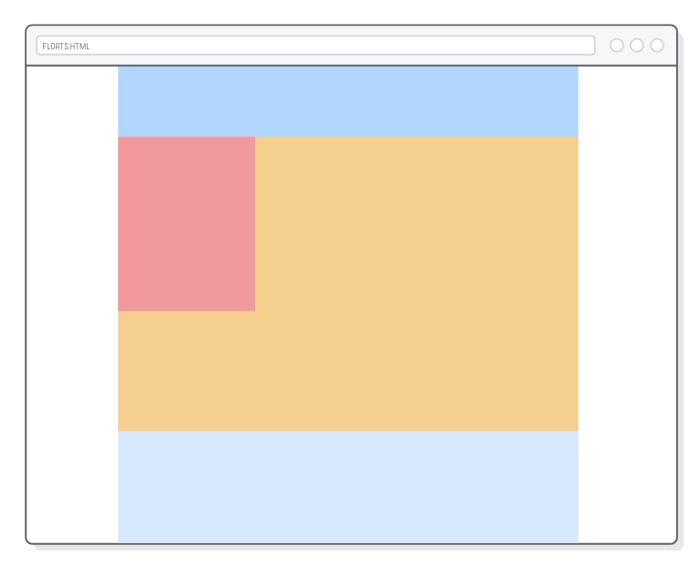
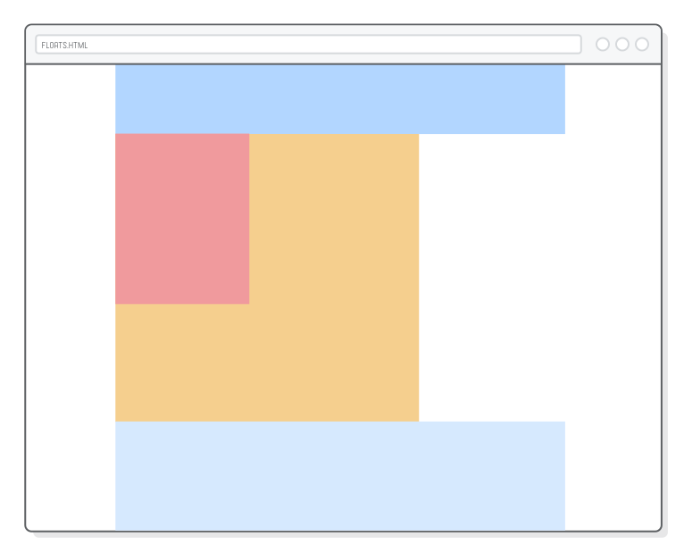
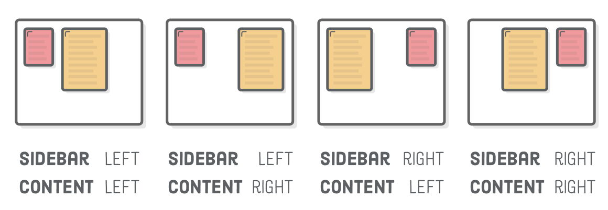
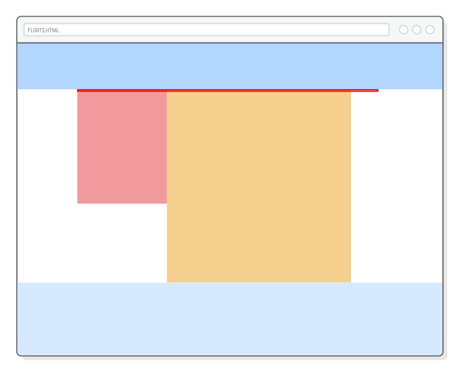
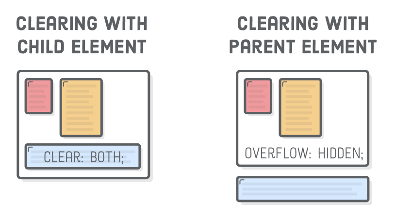
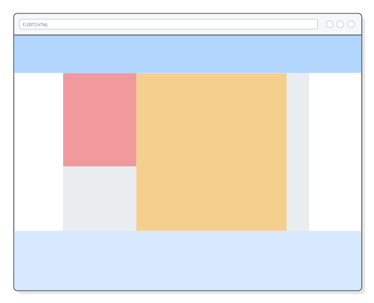
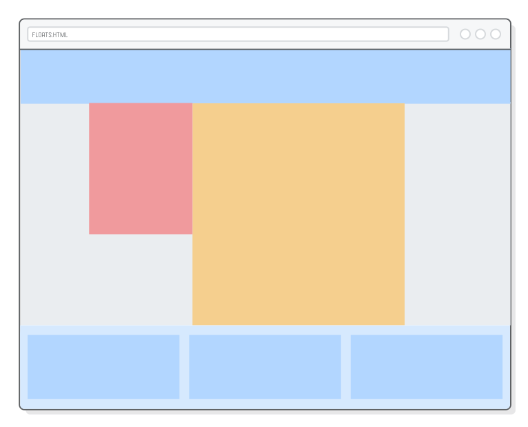
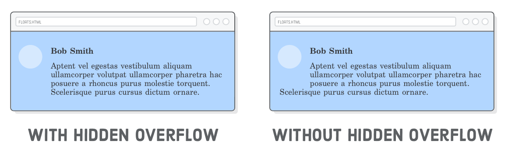

An old-timey web dev tutorial (and a friendly intro to CSS layouts)
Over the last few chapters, we’ve learned how to manipulate the size
of boxes and the space around them,
but for the most part, we were stuck with the default vertical flow of the
page. Block elements always appeared vertically one after another, effectively
limiting us to a single-column layout.
“Floats” let you put block-level elements side-by-side instead of on top of
each other. This is a big deal. It lets us build all sorts of layouts,
including sidebars, multi-column pages, grids, and magazine-style articles with
text flowing around an image. This is where we finally start creating real web
pages.
Float-based layouts have mostly been replaced with Flexbox in modern websites. But, that’s not
to say this chapter isn’t worth reading. For over a decade, floats served as the
foundation for the majority of websites on the Internet, which means you’ll
definitely encounter them at some point in your career.
Perhaps more importantly, the limited nature of floats makes them a gentler
introduction to CSS layouts than Flexbox. Instead of being overwhelmed with all
the possibilities of Flexbox, we’ll get a chance to focus more on the
process of building up a sophisticated web page layout.
Setup
This chapter demonstrates CSS floats with a pretty simple sample project.
Instead of working with proper HTML content as we have been in previous
chapters, we’ll be styling a bunch of empty <div> elements.
We’ll end up with something that looks like the following, which is a pretty
big divergence from the types of web pages we’ve been creating thus far.

First, create a new folder called floats, then add a new web
page called floats.html with the following markup:
This gives us the basic structure for most websites on the Internet. We have
a place to put a navigation menu, a sidebar, the main content of the page, and
a footer. Think of all these as container divs that you
can put your actual HTML content into.
You won’t see much when you open floats.html in a browser
because empty elements have zero height. We’ll fix this in the next
section.
Floats alter the default layout of a web page, so we should probably start
by reviewing what exactly that “default” behavior is. We introduced
this in block
elements versus inline elements, but it’s about to become much
more important.
We can get a better look at our example page by adding some background
colors and explicit heights to each of our <div>
elements. Add this to styles.css:
This gives us a nice rainbow, which isn’t what we’re looking
for, though it does demonstrate some useful concepts.

The important part here is that each block-level element fills 100% of its
parent elements’s width (<div class='page'> in this
case), and they appear vertically one after another. Again, we’re
essentially limited to a single-column layout.
Typically, you’d want to let the height of these boxes be determined
automatically based on the content they contain; however, we’re more
concerned with controlling layouts this chapter, so we won’t be dealing
with much real content. This is why we need the explicit
height properties.
It’s worth taking a look at what happens when we shrink an
element’s width. Update our .sidebar rule to match the
following:
The sidebar element gets narrower, but the rest of the boxes stay in the
exact same position. All the blocks are still rendered vertically one after
another. This is the behavior we’ll be changing with floats.
Floating an Element
The CSS float property gives us control over the
horizontal position of an element. By “floating” the
sidebar to the left, we’re telling the browser to align it to the left
side of the page. Go ahead and float our sidebar with the following line:
However, this doesn’t just align the sidebar—it also
tells surrounding elements that they can flow around the sidebar
instead of beginning underneath it. It’s as if the sidebar is inside the
.content block, so any HTML markup in .content would
wrap around the sidebar’s box. This gives us a magazine-style layout:
You can also float elements right, as shown below (let’s keep our
sidebar floated left though). Or, if you’re overriding a float
declaration, you can cancel it with the none value. These are the
most common values for the float property.
We now have all the tools necessary to align block-level elements: floats
for left/right alignment and auto-margins for center alignment. Remember that
this only applies to block boxes. Inline boxes are aligned with the
text-align property, as discussed in the previous chapter.
Floating Inside of Parents
Floated boxes always align to the left or right of their parent element. In
our example, the sidebar’s parent is <div
class='page'>, which is as wide as the browser window. This is why
our sidebar floats to the far left of the page.
Let’s change this by giving our page a fixed-width layout. Once again,
the auto-margin centering technique comes in handy. Add this to
styles.css:
.page {
width: 900px;
margin: 0 auto;
}
Now, we can see that .sidebar floats to the left of the
.page container, opposed to the edge of the browser window.

Positioning nested container divs like this is how you build up
sophisticated website layouts. Here, we started with .page to
center everything, then we left-aligned a sidebar inside that
centered page. Things can get way more complex, but our simple example
demonstrates the universal truth of CSS layouts: everything is a box inside of
a box inside of another box.
Multiple Floats
Let’s examine our current magazine-style float a little bit more by
adding an explicit width to our .content block:
This clearly demonstrates that our sidebar is in fact inside the
.content block: if you take a screenshot of them, you’ll
have an image that’s 650 pixels wide opposed to 850 pixels (our sidebar
is 200 pixels wide).

This kind of float behavior is nice for images (which we’ll see later on), but for page layout, we actually
want the content block to be next to the sidebar instead of flowing
around it. For this, we need to tell the content block to float left, too. Add
one more line to the .content rule:
When you float multiple elements in the same direction, they’ll stack
horizontally, much like the default vertical layout algorithm, except rotated
90 degrees. The above code causes our entire content block to appear on the
right of the sidebar instead of wrapping around it.
This gives us true control over the horizontal alignment of our block boxes.
Try playing with the float values for both .sidebar
and .content, and you’ll find that we already have a couple
of distinct layouts at our disposal:

Make sure both of them are floating left before moving on. That takes care
of the layout for the sidebar and content blocks, but it unfortunately messed
up our .footer element…
After a Float
You probably noticed that our footer shows up in the top right, directly
below .menu. That’s because floated boxes are removed from the
normal flow of the page. The height of our floated elements don’t contribute to
the vertical position of the footer, so it simply sticks itself below the last
element that wasn’t floated.
We can see this more clearly by adding a red border around our
.page element:
Notice how the border is only around the .menu and
.footer elements. It’s as if the floated elements weren’t even
there. There are two ways to fix this: clearing a float and hiding
overflow.
Clearing Floats
“Clearing” a float is when we tell a block to ignore any floats
that appear before it. Instead of flowing around the floated box, a cleared
element always appears after any floats. It’s like forcing a box back
into the default vertical flow of the page.
We can use the clear property to make our .footer
drop down to the bottom of the page:
Usually, you want to clear both left and right floats as we did here, but
you can choose to clear only one or the other with the left or
right values. Note that the red border now wraps all the way
around the footer, indicating that the floated elements indeed count towards
the height of the .page container:
Depending on the type of layout you’re trying to create, this is a
perfectly acceptable solution. We could stop here, but we’re going to
explore float behavior more by transforming our page into a full-bleed layout
that has background colors filling the entire browser window.
Watch what happens when we take the menu and footer out of the
.page element. Change the <body> element to
match the following:
Since .menu and .footer are outside our
fixed-width .page, they’re the full width of the window,
which is exactly what we want for a full-bleed layout. However, notice how
.page has zero height again despite the fact that the footer still
clears the sidebar and content blocks.

Once again, the only elements in .page are floated, so they
don’t count towards its height. In other words, moving the footer outside
of the .page container broke our clear fix.
Hiding Overflow
Clearing floats only fixes the height issue when there’s an element
inside the container element that we can add a clear
property to. Now that our footer is outside .page, we need a new
way to make floated elements contribute to the height of their container.

The solution is the CSS
overflow property. By adding an overflow:
hidden declaration to a container div, we’re telling it to
recognize the height of any floated elements it contains. This is how we can
add a background color to our .page element and have it actually
render:
.page {
width: 900px;
margin: 0 auto;
overflow: hidden; /* Add this */background-color: #EAEDF0; /* Add this */
}
You should now be able to see a light gray background in .page
instead of the default white. This isn’t full bleed yet (we’ll address that in
the next section). The important part here is the behavior of overflow:
hidden. Without it, we wouldn’t be able to see the .page
container’s background because it would have zero height.

To summarize, when you have an extra unfloated HTML element at the bottom of
a container div, use the clear solution. Otherwise, add an
overflow: hidden declaration to the container element. The
underlying idea for both options is that you need a way to tell the browser to
incorporate floats into the height of their container element in order for
their backgrounds to show up.
Full-Bleed Layouts
Next, we want to make our .page background fill the entire
browser window without changing the alignment of our sidebar or content blocks.
The problem is, our .page is busy centering everything—we
can’t use it for a full-bleed background because centering requires an
explicit width property.
It’s time for another container div. Putting a box around
.page lets it continue centering stuff while giving us a place to
define a background-color property. Change our
<body> element to match the following:
<body><divclass='menu'>Menu</div><divclass='container'><!-- Add this --><divclass='page'><divclass='sidebar'>Sidebar</div><divclass='content'>Content</div></div></div><!-- Add this --><divclass='footer'>Footer</div></body>
Remember that the default block-rendering behavior is for elements to fill
the width of their container. So, we should be able to move our
background-color declaration to a .container rule to
get a full-bleed background:
As in the previous section, we still need the overflow: hidden
line to force the .container to pay attention to the height of the
floated elements. Without it, we wouldn’t see our background color
because .container would have zero height.
This gives us three nested <div> elements just for laying
out our page: a .container wrapper for full-bleed background
color, a fixed-width .page for centering everything, and finally
left-aligned .sidebar and .content blocks. This kind
of nesting and aligning is pretty typical of most website layouts.
Floats for Equal-Width Columns
So far, we’ve seen a sidebar layout, a fixed-width layout, and a
full-bleed layout. Floats can also be used to create multi-column layouts. This
works just like our .sidebar and .content
floats—we just have more of them.
Next we’re going to add three equal-width columns to our footer.
Update the <footer> element, like so:
We can style each of these columns just like we laid out the rest of our
page. Add a new rule to styles.css:
.column {
float: left;
width: 31%;
margin: 20px1.15%;
height: 160px;
background-color: #B2D6FF; /* Medium blue */
}
This is the first time we’ve used percentage values instead of
explicit pixel values. Percentages in CSS are relative to the width of the
parent element. The result is three columns that automatically resize to
one-third of the browser window. Resize the browser window, and you’ll
see our columns grow and shrink accordingly. This is the beginning of responsive design.

Anyhoo, let’s not lose sight of the central thesis of this chapter:
floats let us stack things horizontally instead of vertically. By changing the
widths of the elements we’re floating, we can get all kinds of different
layouts, from sidebars to multiple columns to grids.
Floats for Grids
Want a grid in the footer instead of 3 columns? No problem! When there
isn’t enough room to stack a floated element horizontally, it pops down
to the next line. All we need to do is add some more .column
elements:
Our footer background is too short. Fortunately, we already know how to fix
that. Let’s replace the footer’s explicit height with another
overflow: hidden so it can accommodate any number of grid
items:
You can use this same technique to make grids of any size. For example,
creating a photo gallery with a bunch of thumbnails is simply a matter of
putting the grid items in .page instead of the footer and adding
<img/> elements to them. But, again, remember that flexbox is a more modern way to create
these kinds of layouts.
A Brief Note on Naming Conventions
The .column class name isn’t exactly accurate anymore.
This scenario is a good example of why we want to avoid class names that
refer to appearance. “Column” isn’t so great because the
content it contains doesn’t necessarily need to be rendered in multiple
columns (e.g., for a mobile layout, there would likely only be one column). A
better name would be something like .footer-item, but we’ll
leave that for you to fix.
Floats for Content
There’s two aspects to defining a web page layout. You have your
overall page structure, which we’ve been working on throughout this
entire chapter. This is stuff like where you sidebar goes, how big your
navigation menu is, etc. The other aspect of layouts is styling the individual
HTML components (your actual content) that go inside this overarching page
structure.
The process for the latter is the same, it’s just nested inside the
former. Let’s add some dummy content to our .content element so
we have something to play with:
<divclass='container'><divclass='page'><divclass='sidebar'></div><divclass='content'><imgsrc='?'class='article-image'/><p>Ad netus sagittis velit orci est non ut urna taciti metus donec magnis
hendrerit adipiscing mauris sit a proin ultrices nibh.</p><p>Enim suspendisse ac scelerisque nascetur vestibulum parturient sed mi a
dolor eu non adipiscing non neque scelerisque netus ullamcorper sed
parturient integer.Eros dui risus non sodales ullamcorper libero a dis
cubilia a orci iaculis cursus.</p><p>Egestas at aliquam a egestas accumsan cum elementum consectetur conubia
tristique eu et vitae condimentum in ante consectetur suscipit a a duis
vestibulum gravida morbi sagittis.Parturient scelerisque facilisis
ullamcorper a a pretium a nisl parturient semper senectus accumsan ipsum
mus scelerisque eget ridiculus.Accumsan dolor a.</p><p>Ligula taciti vel primis sit a tincidunt habitant parturient parturient
in parturient ante nulla consectetur sem.Facilisis parturient litora.</p></div></div></div>
We’ve got an image and several paragraphs that we can style just like
our structural divs. For example, let’s create a magazine-style layout
by floating the image and letting the text flow around it. Add a couple more
rules to our stylesheet:
Notice how we have a float inside of a float, and everything works just
fine. Laying out a website is a recursive process: you build a high-level
structure to work in, then you fill it with your actual content. More complex
layouts may need another layer or two of nesting, but the idea is the same.
Hiding Overflow (For Content)
You’ll find examples of nested layouts all over the place. For our
final example, consider a basic user-comment thread. You have an image
that’s floated left with a heading and some text next to it:
Let’s try creating this in our footer. In your favorite
.column element, add the following:
<divclass='column'><divclass='avatar'></div><h3class='username'>Bob Smith</h3><pclass='comment'>Aptent vel egestas vestibulum aliquam ullamcorper volutpat
ullamcorper pharetra hac posuere a rhoncus purus molestie torquent. Scelerisque
purus cursus dictum ornare a phasellus. A augue venenatis adipiscing.</p></div>
This highlights another use case for our overflow: hidden
trick. Sticking it on our .comment box made sure that the text
“horizontally cleared” (that’s not a technical term) the floated image. Without
it, the last line of the .comment text would hang underneath the
image.

In other words, overflow: hidden breaks the magazine-style
layout from the previous section, but in a very useful way.
Summary
This chapter was our first encounter with realistic web page layouts. We
learned how to float divs to the left and right, how to deal with content after
a float, and how to combine floats with the auto-margin centering technique
from the CSS Box Model chapter.
These are the tools we need to create sidebars, grids, an magazine-style
layouts.
It’s important not to lose sight of the developer’s role in the website
creation process. Your job as a web developer is to take a beautifully designed
mockup and turn it into the HTML and CSS that browsers can display to your end
users. Floats are a big leap forward towards that end, but they’re also
becoming obsolete in favor of the flexbox layout scheme.
In the next chapter, we’ll learn even more ways to lay out complex websites
using flexbox. The CSS properties will be new, but the process will be
the same as it was in this chapter: we’ll still be aligning boxes inside of
other boxes, inside of other boxes, and so on until we accomplish the desired
layout.